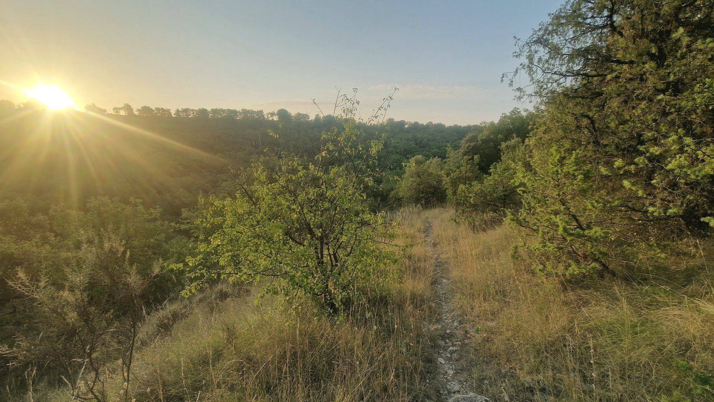

Environmental
A light footprint
- A tree planted for every client we work with
- Remote and hybrid working by default, meeting in person when it adds real value
- Rail and shared travel where practical
- Paper-light, digital-first ways of working

Environment, ethics and sustainability
We help clients build safer, more resilient futures. We hold ourselves to the same standard: in how we work, how we advise and what we give back.
Our pledge
For every client we work with, we will plant a tree. It is a small, lasting way of giving something back to the landscapes and communities we care about, and it grows alongside our relationships.
Environmental
Ethical
Sustainable
“Responsibility: recognising the consequences of advice for people, organisations and communities.”